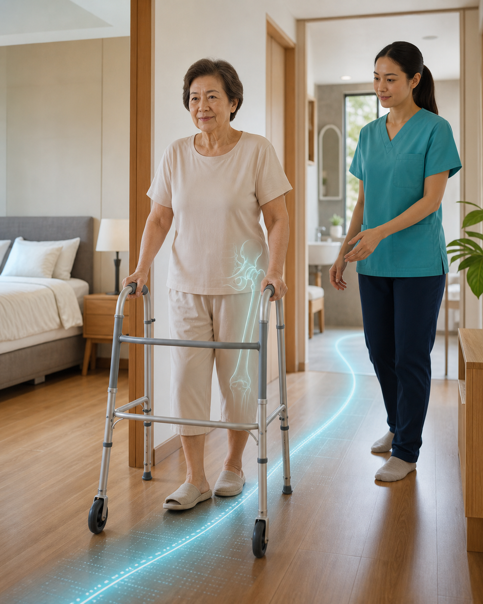

BODY STATUS / PERSONAL RECOVERY PLAN

แผน 04 · หลังผ่าตัด / กระดูกสะโพกหักฟื้นการลุกเดินอย่างปลอดภัย โดยไม่รบกวนส่วนที่รักษา
แผนนี้จะเริ่มจากคำสั่งลงน้ำหนัก ชนิดการรักษา และความช่วยเหลือที่คุณต้องใช้จริง ก่อนปรับแบบฝึกให้เหมาะกับบ้าน
วันนี้ทำอะไรได้ฝึกกระดกข้อเท้าและท่าที่ไม่ขัดกับคำสั่งจากโรงพยาบาลระบบจะปรับรายการหลังตอบคะแนนการเคลื่อนไหว
ตอนนี้ยังไม่ควรทำยังไม่เพิ่มการลงน้ำหนักหรือเลิกใช้อุปกรณ์เองถ้าไม่ทราบคำสั่ง ให้ตรวจใบจำหน่ายก่อนทดลองยืนเดิน
โรคและภาวะที่เกี่ยวข้อง
กดชื่อหัวข้อเพื่ออ่านคำอธิบายสั้น ๆ กดหัวข้ออื่นเพื่อเปลี่ยนข้อความ
กระดูกสะโพกหัก
กระดูกบริเวณคอหรือส่วนต้นของกระดูกต้นขาหัก มักทำให้เจ็บและลงน้ำหนักลำบาก การฟื้นตัวต้องดูชนิดการยึดกระดูก ภาพถ่ายติดตาม และคำสั่งลงน้ำหนักร่วมกัน
การรักษาของคุณคืออะไร
ข้อมูลนี้เปลี่ยนทั้งข้อควรระวัง การติดตามกระดูก และวิธีเพิ่มการเดิน
ภาพตัวอย่าง อุปกรณ์จริงอาจแตกต่าง
เปลี่ยนข้อสะโพกบางส่วน
หัวกระดูกต้นขาส่วนที่เสียหายถูกเปลี่ยนด้วยข้อเทียม การฟื้นตัวจึงเน้นแผล เนื้อเยื่อรอบข้อ ความมั่นคง และการกลับมาเดิน
คำที่อาจพบในใบจำหน่ายHemiarthroplasty · Bipolar prosthesis · Hip replacement
ข้อควรระวังเรื่องข้อหลุดขึ้นกับแนวผ่าตัดและคำสั่งศัลยแพทย์ ไม่ควรเดาจากชื่อการผ่าตัดอย่างเดียว
กระดูกจะติดเมื่อไร และระยะฟื้นตัวนานแค่ไหน
เวลาเป็นเพียงกรอบติดตาม ไม่ใช่คำรับรองว่ากระดูกติดหรือข้อพร้อมใช้งานแล้ว
ช่วงแรกดูแลแผล ลดบวม และฝึกย้ายตัวตามคำสั่ง
ประมาณ 6-12 สัปดาห์มักเป็นช่วงประเมินการเดิน แผล เนื้อเยื่อ และภาพถ่ายติดตาม
หลายเดือนถัดมาเพิ่มกำลัง ความทนทาน และกลับสู่กิจวัตรที่ต้องการ
ข้อควรระวังเฉพาะสะโพก
ใช้เฉพาะเมื่อทีมผ่าตัดกำหนดสำหรับคุณ หากรักษาด้วยการยึดกระดูกอาจไม่มีข้อห้ามชุดนี้
ไม่เกิน 90°ใช้เก้าอี้สูงพอและไม่ก้มตัวลึก
ไม่ไขว้ขาไม่พาขาข้างผ่าตัดข้ามแนวกึ่งกลาง
ไม่บิดหมุนเลี้ยวด้วยก้าวสั้นหลายก้าว
กิจวัตรกระตุ้นการไหลเวียน
แยกจากท่าฝึกหลักและทำต่อเนื่องในช่วงที่ยังเดินน้อย
ปัญหาหลักและแผนจัดการ
โฟกัส 3 เรื่องที่มีผลต่อการกลับไปใช้ชีวิตในบ้านมากที่สุด
01เคลื่อนไหวให้ปลอดภัยโดยไม่รบกวนส่วนที่รักษา
คำสั่งลงน้ำหนักและข้อห้ามต่างกันตามชนิดการผ่าตัด จึงต้องรู้สิ่งที่ทำได้วันนี้ก่อนเพิ่มการฝึก
แผนจัดการปัญหานี้ใช้ใบจำหน่ายเป็นขอบเขต ติดตามแผล ปวด บวม และตรวจสัญญาณอันตรายทุกวัน
ตอบเพิ่มเพื่อสร้างแผนเฉพาะตัวกรอกข้อมูลจากใบจำหน่ายและอาการที่เกิดขึ้นจริง
!นักกายภาพประเมิน: ตรวจความสอดคล้องของแผล อาการ และการเคลื่อนไหวกับคำสั่งแพทย์
02กำลังขาและการลุกยืนยังไม่กลับมาเต็มที่
ช่วงนอนโรงพยาบาลและความปวดทำให้กล้ามเนื้อทำงานลดลง การลุกจากเตียงหรือเก้าอี้จึงต้องใช้แรงช่วยมากขึ้น
แผนจัดการปัญหานี้เริ่มจากท่าเกร็งกล้ามเนื้อหรือลุกจากเก้าอี้สูงตามระดับ แล้วเพิ่มจำนวนเมื่ออาการกลับใกล้เดิม
ตอบเพิ่มเพื่อสร้างแผนเฉพาะตัวเลือกระดับที่ทำได้จริงในช่วงนี้ ไม่ต้องฝืนเพื่อให้ได้คะแนนสูง
คะแนนการเคลื่อนไหวช่วงแรก (CAS)- / 6
0 = ทำไม่ได้แม้มีคนช่วย · 1 = ต้องมีคนช่วยหรือบอกขั้นตอน · 2 = ทำได้เองพร้อมอุปกรณ์
ลุกจากเตียงไปนั่ง ลุกจากเก้าอี้ เดินในบ้าน Barthel Indexยังไม่ครบ
แบบประเมินนี้จะปรากฏเมื่อการช่วยเหลือตัวเองยังจำกัดมาก ใช้ดูภาระกิจวัตรโดยรวม ไม่ใช่ใช้กับทุกคน
!นักกายภาพประเมิน: เทคนิคย้ายตัว กำลังขา และคุณภาพการรับน้ำหนักจริง
03การเดินและอุปกรณ์ต้องเข้ากับบ้านจริง
walker ที่ไม่พอดีหรือเส้นทางแคบอาจทำให้เลี้ยวยาก ติดมุม และเพิ่มความเสี่ยงล้ม
แผนจัดการปัญหานี้ฝึกบนเส้นทางจำเป็นระยะสั้น ใช้อุปกรณ์เดิม และให้ผู้ดูแลเฝ้าตามระดับความช่วยเหลือจริง
ตอบเพิ่มเพื่อสร้างแผนเฉพาะตัวบันทึกจากระยะและเวลาที่เดินได้จริงในบ้าน
!นักกายภาพประเมิน: ความสูง walker ลำดับก้าว การเลี้ยว และทางเดินในบ้าน
สถานะข้อมูลสำหรับแผนเฉพาะตัว
แบบประเมินอยู่ใต้ปัญหาแต่ละข้อ กดหัวข้อที่ต้องการตอบได้โดยไม่ต้องเลื่อนหาฟอร์มด้านล่าง
เลือกคะแนน CAS ให้ครบ 3 ข้อ
ข้อมูลที่คุณตอบจะช่วยปรับระดับความหนัก จุดที่ควรระวัง และลำดับการฝึกให้เหมาะกับอาการของคุณมากขึ้น
เริ่มได้ก่อนระหว่างตอบแบบประเมินโปรแกรมเริ่มต้น
ไม่เกิน 2 กิจกรรม และจะไม่ใส่การยืนหรือเดินหากยังไม่ทราบคำสั่งลงน้ำหนัก
Ankle Pump10 ครั้งทุกชั่วโมงขณะตื่น
เกร็งกล้ามเนื้อหน้าขาค้าง 3-5 วินาที 6-10 ครั้ง
แผนฟื้นการลุกเดินของคุณ
นักกายภาพประเมินเฉพาะส่วนที่ต้องใช้การสังเกต การจับท่า และบ้านจริง
นำข้อความนี้ไปวางใน AI ที่คุณใช้ เช่น ChatGPT, Claude, Gemini, Grok หรือแอปอื่น ๆ เพื่อให้ช่วยวิเคราะห์อาการและถามต่อจากข้อมูลของคุณได้